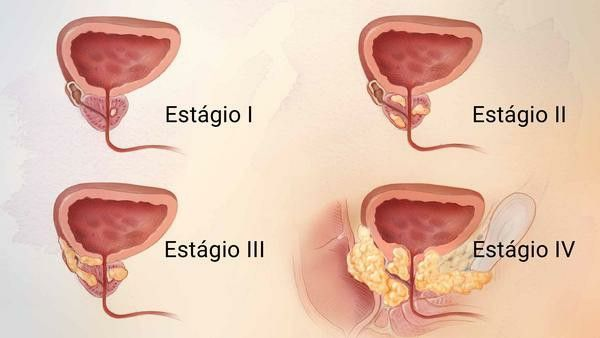

Home
Sintomas
Prevenção e Tratamento
Sintomas
Na fase inicial, o câncer de próstata não apresenta sintomas e quando alguns sinais começam a aparecer, cerca de 95% dos tumores já estão em fase avançada, dificultando a cura. Na fase avançada, os sintomas são:
dor óssea;
dores ao urinar;
vontade de urinar com frequência;
presença de sangue na urina e/ou no sêmen.

Fatores de risco:
histórico familiar de câncer de próstata: pai, irmão e tio;
raça: homens negros sofrem maior incidência deste tipo de câncer;
obesidade.
Fonte:
https://bvsms.saude.gov.br/novembro-azul-mes-mundial-de-combate-ao-cancer-de-prostata/